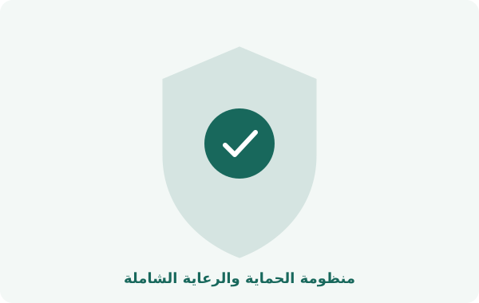
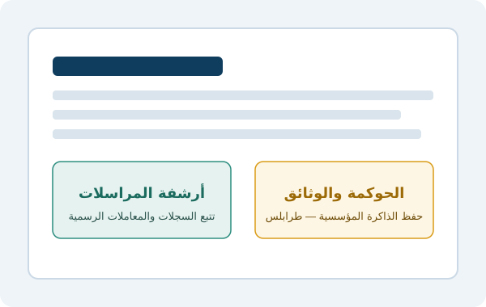

الحماية والرعاية الشاملة
دعم حقوق الطفل وحمايته ورعايته الصحية والاجتماعية والتعليمية في بيئة آمنة ومستقرة.
منصة متكاملة تضم رؤية المجلس ومحاور حماية الطفل ورعايته، وتبويب لم شمل الليبيين، والسرد الكامل للفيلم الوثائقي، ومعرض الصور، ومنظومة تتبع المراسلات والأرشيف الإداري.
إطار عمل متكامل يجمع بين الرعاية والحماية، وتنظيم المراسلات والأرشيف، والتوثيق الوثائقي والمرئي.

دعم حقوق الطفل وحمايته ورعايته الصحية والاجتماعية والتعليمية في بيئة آمنة ومستقرة.

متابعة المراسلات الإدارية والسجلات والوثائق وحفظ الأرشيف المؤسسي وتسهيل الوصول إليه.

عرض السرد الكامل للفيلم الوثائقي ومعرض الصور المرفق لتوثيق الرسالة والأنشطة.
النص الكامل للسرد الوثائقي متاح في صفحة الفيلم الوثائقي مع إمكانية الاستماع إلى القراءة الصوتية.
"في كل طفل حلمٌ يستحق أن يُصان، وفي كل خطوة تبنيها المؤسسات أملٌ يمتد نحو مستقبل أكثر أماناً وإشراقاً. هنا يبدأ سرد حكاية المجلس الأعلى للطفولة: ذاكرة تحفظ الحقوق، وعمل مؤسسي يواكب الواقع، وصوت يعلو من أجل جيل الغد."
قراءة النص الكامل للفيلم الوثائقي